山梨ITコミュニティ合同イベント
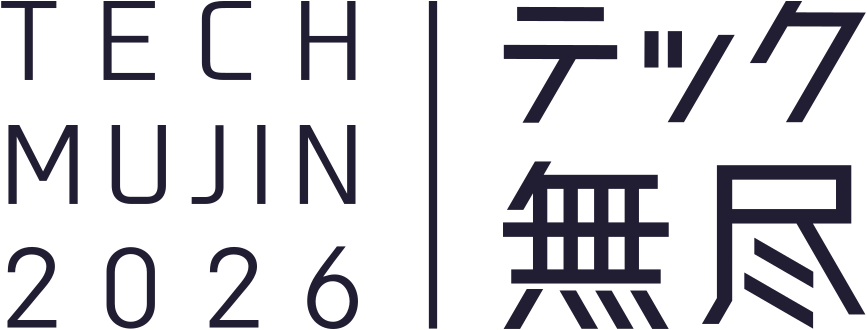
202611.22SUN
山梨のITコミュニティが一堂に会する1日。
初めての方も、聞くだけ・見るだけの参加も歓迎します。
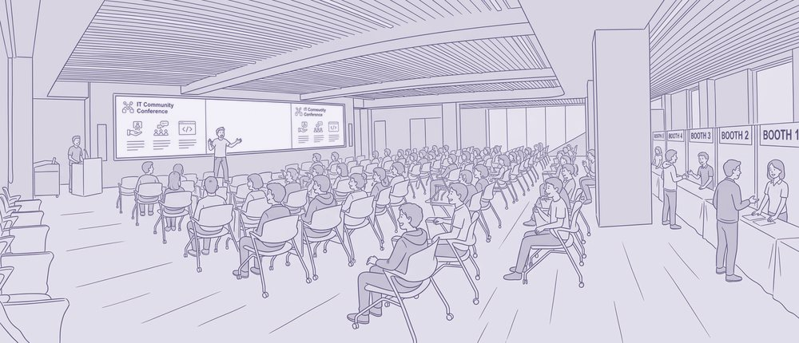
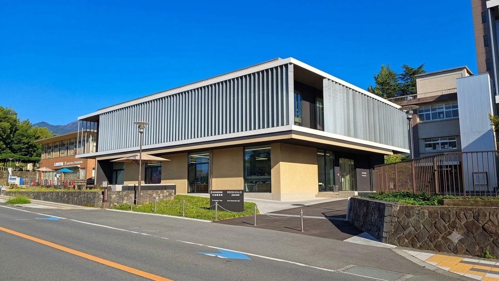
テック無尽とは
ABOUT
山梨にどんな技術者の集まりがあるのか、1日で一望できます。
山梨にもITコミュニティはいくつもありますが、それぞれがどんな活動をしているのかは外からは見えにくいものです。テック無尽は、県内で活動する13のコミュニティが一堂に会する1日です。
-
幅広い技術テーマに触れる
AI、クラウド、IoT、Web、業務改善、子ども向けプログラミングまで。発表とブースで、13のコミュニティの取り組みをまとめて知ることができます。
-
気になった場に、次から通える
ブースではメンバーと直接話して雰囲気を確かめられます。各コミュニティの今後の予定もご案内します。
-
聞くだけ・見るだけでOK
発表も発言も必須ではありません。一人での参加も、途中からの参加も歓迎です。
開催概要
OUTLINE
- 開催日
- 2026年11月22日（日）
- 開催時間
- 10:00 〜 17:00／ 開場 9:30
- 会場
- 山梨大学 甲府キャンパス 共創環境棟 治ホール／ 山梨県甲府市武田4-4-37
- 参加費
- 無料／ 懇親会は別途
- 参加方法
- connpassによる事前申込制
https://techmujin.connpass.com/event/406980/ - 対象
- ITに関わる方、これから関わりたい方ならどなたでも。経験年数・職種・所属は問いません。／ 学生、企業や個人で働くエンジニア、企業のDX推進・IT企画のご担当者、教育・行政関係者など
- 主催
- テック無尽
- 協力
- 山梨大学
- 後援
- 山梨日日新聞社、山梨放送、テレビ山梨、（一社）山梨工業会
コンテンツ
SESSIONS
-
オリエンテーション
イベントの趣旨や過ごし方をご案内します。「聞くだけの参加も歓迎」「自由に回遊してOK」——安心して過ごすための説明からはじまります。
-
コミュニティ紹介
参加13団体の運営メンバーが登壇し、1枠5分で活動を紹介します。技術の詳細よりも「どんな人が、どんな空気で活動しているか」を伝える時間です。
-
昼休憩
ブースを見て回ったり、気になった人と話したり、食事をとったり。90分をどう使うかは自由です。
-
コミュニティLT
各コミュニティによるライトニングトーク。コミュニティ紹介から一歩踏み込んで、活動テーマの中身を発表します。
-
テック無尽ラジオ
参加者が投稿したコメントを司会が代読し、そのままゲストを交えた公開トークへ。発言が得意でなくても、一歩だけ関われる仕組みです。
-
オープンブース
コミュニティ・個人・協賛企業による展示エリア。終日開設しています。「見るだけ」「立ち寄るだけ」も歓迎です。
-
クロージング・懇親会
1日のまとめと、各コミュニティの今後の予定をご案内します。終了後18:00からは、希望者を対象とした懇親会を予定しています。
参加コミュニティ
COMMUNITIES
13コミュニティが参加します
「LT登壇」はステージでの発表、「ブース出展」は会場内での展示があることを示しています。
- JAWS-UG山梨 AWSユーザーグループ（JAWS-UG）の山梨支部
-
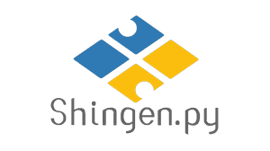
Shingen.py 山梨のPythonコミュニティ。入門から実務利用まで - Houtou.pm Perlを中心に、言語やツールの話をする集まり
- Kofu.rb 甲府のRubyコミュニティ。文法から実践まで
-
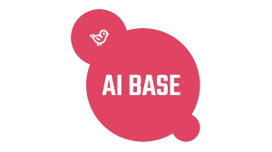
AI BASE AI・生成AIの活用をテーマにした集まり -
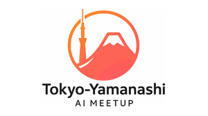
東京-山梨 AI ミートアップ 東京と山梨をつなぐ、AIをテーマにした勉強会 -
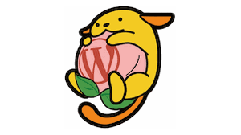
Yamanashi WordPress Meetup WordPressユーザーの集まり。サイト制作・運用の情報交換 -
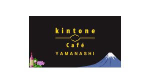
kintone Café 山梨 kintoneを使った業務改善の事例やノウハウを共有 - SORACOM UG 山梨 IoTプラットフォームSORACOMのユーザーグループ
- コーダー道場甲府 子どものためのプログラミング道場 CoderDojo
- スクラッチディ in 山梨 子ども向けのScratchプログラミングイベント
-
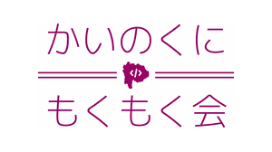
甲斐国もくもく会 各自が持ち寄った作業や学習を、黙々と進めるもくもく会 -
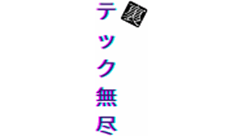
裏テック無尽 テック無尽から生まれたLT会。テーマを問わず気軽に話せる場
アクセス
ACCESS
山梨大学 甲府キャンパス
共創環境棟 治ホール
〒400-8510 山梨県甲府市武田4-4-37
- 電車新宿駅から特急あずさ・かいじで約90分「甲府駅」下車
- 徒歩甲府駅北口から約15分
- バス「甲府駅北口」2番のりばから武田神社・積翠寺方面「山梨大学」下車
- 車会場周辺のコインパーキングをご利用ください。
会場は3つのゾーンで構成されます
-
ステージエリア
ホール前方
コミュニティ紹介・LT・テック無尽ラジオなど、発表コンテンツが進行します。
-
ブースエリア
ホール内後方
コミュニティ・協賛企業の展示ブースが並びます。終日開設。
-
コミュニケーションスペース
ホール外
座って話せる、終日開放のスペース。発表の途中で抜けて話しても大丈夫です。
よくある質問
FAQ
一人で参加しても大丈夫ですか？
はい。初めての方や、一人で来られる方を前提に設計しています。知り合いがいなくても過ごせるよう、ホールの外に座って話せるスペースを終日開放しているほか、ブースは「見るだけ」「立ち寄るだけ」も歓迎しています。
途中から参加したり、途中で帰ったりできますか？
できます。出入りは自由で、受付を済ませたあとは好きな時間に来て、好きな時間に帰っていただけます。ステージの発表中に席を立って外で話していただいても構いません。
ただ、全体の流れや各コミュニティの雰囲気がつかみやすいので、可能であれば10:00のオリエンテーションからの参加をおすすめします。
発表や自己紹介をしなければいけませんか？
いいえ。発表も発言も必須ではありません。聞くだけ・見るだけの参加を歓迎しています。話しかけられるのが苦手な方も、ブースの前を通り過ぎるだけで構いません。
発言せずに参加できる仕組みとして、スマートフォンからコメントを投稿し、司会が代読する「テック無尽ラジオ」の時間も用意しています。
服装はどうすればよいですか？
普段着で構いません。スーツの方はほとんどいない想定です。会場内を歩き回るので、動きやすい服装をおすすめします。
名刺は必要ですか？
必須ではありません。お持ちいただければ交流の際に使えますが、SNSのアカウントを交換する方も多い場です。会社の名刺を出したくない場合も、無理に出す必要はありません。
昼食はどうなりますか？
12:00からの90分が、ブースの見学と昼休憩を兼ねた時間です。昼食の提供はありませんので、各自でご用意ください。
会場周辺にはコンビニエンスストアや飲食店があります。飲食が可能な場所については、当日会場でご案内します。
懇親会はどんな場ですか？ 参加は必須ですか？
任意参加です。イベント終了後の18:00から、甲府駅北口近くの飲食店での開催を予定しています。会費は5,000円です。
懇親会に参加される方は、下記のURLからお申し込みください。（先着順）
子どもと一緒に参加できますか？
保護者同伴でのご参加を歓迎しています。子ども向けのプログラミングを扱うコミュニティも参加しています。お子さま連れでの参加を検討されている場合は、事前にお問い合わせいただけると当日のご案内がしやすくなります。
ITの仕事をしていなくても参加できますか？
参加できます。これからITに関わりたい方、業務改善やDXの担当になった方、学生の方など、経験や職種を問わずご参加いただけます。技術の詳細よりも「どんな人が、どんな雰囲気で活動しているか」を伝える構成にしています。
写真撮影やSNSへの投稿はできますか？
会場の様子やご自身の参加についての投稿は歓迎しています。ただし、他の参加者が写った写真や、発言の内容を本人の許可なく公開することはご遠慮ください。詳しくは行動規範をご覧ください。
協賛
SPONSORS
テック無尽の協賛は、単なる広告枠ではなく、地域のITコミュニティとの関係を築く機会として位置づけています。
メインパートナーMAIN PARTNER
パートナーPARTNER
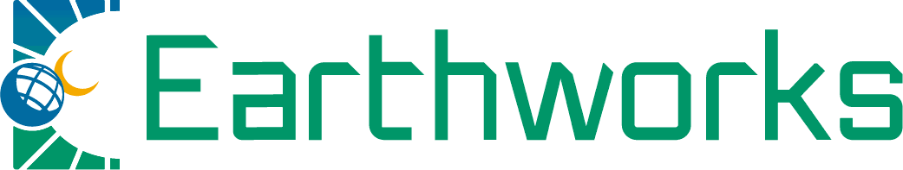
サポーターSUPPORTER
協賛にご関心をお持ちの企業さまは、お問い合わせください。
スタッフ
STAFF
「テック無尽 2026」は、山梨県内のITコミュニティ有志による団体「テック無尽」が運営しています。
行動規範
CODE OF CONDUCT
テック無尽は、立場や経験を問わず、誰もが安心して集まれる場を目指しています。ご参加いただくすべての方に、以下へのご協力をお願いします。
基本姿勢
多様な背景・経験・価値観を持つ参加者に配慮し、初めて参加する方も安心して過ごせる雰囲気づくりにご協力ください。
禁止事項
- 性別、年齢、国籍、障がいの有無、性的指向・性自認、経験レベルなどに基づく差別的な言動
- ハラスメント（暴言、脅迫、つきまとい等を含む）
- 参加者・登壇者・出展者・運営への過度な批判や攻撃的な言動
- 本人の許可なく撮影した写真・映像・発言内容をSNS等で公開する行為
発表・展示・会話について
発表や展示へのフィードバックは、敬意を持って行ってください。「聞くだけ」「見るだけ」の参加も歓迎しており、会話への参加を強要することはありません。
違反があった場合
行動規範に反する行為を見かけた、または受けた場合は、会場内のスタッフまたはお問い合わせフォームまでご連絡ください。運営が状況を確認のうえ、必要な対応を行います。
本行動規範は、会場内の言動に加え、関連するオンライン上の言動にも適用されます。
お問い合わせ
CONTACT
参加コミュニティ、LT登壇・ブース出展、運営協力、協賛、取材などについてのご相談はこちらから。